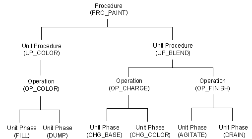

Batch recipe creation
A recipe defines a sequence of steps that is started and stopped in a specific order. Recipes enable a batch plant to use the same process equipment to produce many different products. A recipe can be as simple as a single operation or as complex as a series of unit procedures.
In the DeltaV Batch subsystem, recipes are defined following the ISA S88.01 procedural hierarchy, as described in the Batch Reference manual:
- Procedure - at the top of the hierarchy; controls a sequence of unit procedures to make a batch
Unit procedures - at the next highest level; control a sequence of operations on a single unit
- Operations - at the lowest level; control a sequence of phases to perform a certain function on a single unit
To develop flexible and reusable recipes, consider the following:
Build a library of generic operations that can be reused in multiple recipes.
- Create recipes that can run on multiple unit modules.
Know your plant's layout and how it will affect the recipe design. For example, the physical configuration of the equipment in the plant determines which equipment units (and, therefore, unit modules) are available for a recipe.
The following diagram shows the recipes we will create for the paint application. We have used a convention of prefixing the names of procedures, unit procedures, and operations with PRC, UP, and OP, respectively, but that isn't a requirement. Recipe names may be up to 16 characters (letters, numbers, and underscores) and start with a letter.

As shown in the diagram, operations (such as OP_FINISH) execute one or more unit phases (such as AGITATE and DRAIN). In turn, unit procedures execute one or more operations, and procedures execute one or more unit procedures. Class-based recipes use unit classes to define the equipment the recipe should run on; any unit in the defined unit class can be chosen at run time. For example, if OP_FINISH is configured as a class-based operation, then the AGITATE and DRAIN phases may run on either UM_BLEND_500 or UM_BLEND_600 during the operation. The equipment is assigned (bound) at batch creation time by selecting the unit modules to be used for that batch.
Subtopics:
- The Recipe Studio application
- Create the operation OP_FINISH in Recipe Studio
- Configure an operation (OP_FINISH)
- Complete the recipe properties
- Verify and save the recipe
- Assigning recipes to a Batch Executive
- Creating additional operations
- Creating unit procedures
- Creating procedures
- Unit aliasing
- Link groups